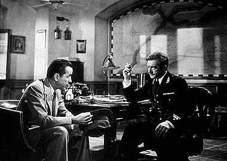
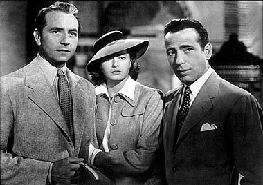
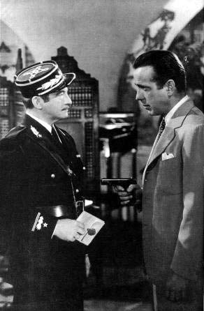

|

Texto de
Susana
Lopes de Alexandria

Ttulo
foi tirado de "Casablanca" (8)

|
 Rick vai at a delegacia, onde Laszlo est preso, e faz uma proposta ao capito Renault. Confessa que os salvo-condutos esto com ele, mas que no pretende vend-los e sim us-los para fugir com Ilsa. Para evitar que o marido v atrs dela, quer que Renault encontre algum pretexto para mand-lo a um campo de concentrao. Sugere que ele solte Laszlo e o prenda em flagrante em seu bar, para onde Rick vai atra-lo com o falso pretexto de vender-lhe os salvo-condutos. Renault aceita a proposta.  Mais tarde, Renault chega ao bar na hora combinada. Em seguida, Laszlo e Ilsa chegam. Renault esconde-se no escritrio de Rick. Ilsa entra primeiro, enquanto Laszlo paga o txi. Ilsa est muito ansiosa, dizendo a Rick que Laszlo ainda no sabe de nada e pensa que ela vai partir com ele naquele avio. Rick a acalma, dizendo que s vo contar tudo a Laszlo no aeroporto. Laszlo entra e Rick lhe entrega os salvo-condutos. Neste momento, Renault d voz de priso a Laszlo.  Para surpresa de todos, Rick aponta um revlver para Renault e ordena que ele ligue para o aeroporto e libere a partida de duas pessoas para Lisboa.
Mas, ao invs de ligar para o aeroporto, Renault liga para Strasser, o major alemo, e finge estar falando com o aeroporto. O major faz uma ligao e ordena que um esquadro de polcia o encontre no aeroporto imediatamente. |